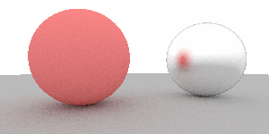
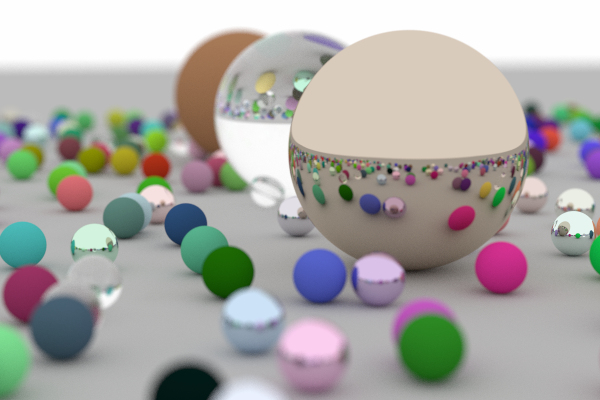

**Assignment 1**
Student name: XXXX
Netid: YYYY
(##) Task 1: Generating rays and using JSON
Manual Ray
Camera Ray
(##) Task 2: Transforms
(##) Task 3: Spheres
(##) Task 4: Materials
Diffuse scattering
Oriented samples
Metal scattering
Oriented samples
(##) Task 5: Recursive Ray Tracing


